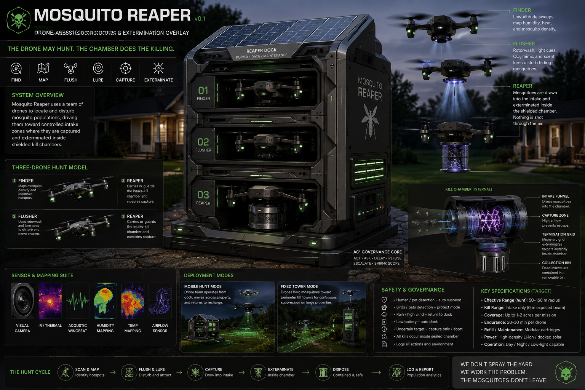

Recovered concept artwork
Mosquito Reaper
Purpose
Recovered illustration of a proposed supervised insect monitoring and enclosed capture system.

Evidence and limits
No demonstrated insect selectivity, pest reduction, non-target safety, electrical safety or flight performance. Illustrated targets are not results.
Next review gate
Evaluate non-target impacts and compare with established monitoring and pest-control methods; no autonomous deployment inferred.
Original artwork preserved as a visual concept.
Recovered artwork supplied from Mr. Peloquin's collaborative design collection; individual illustration authorship is unverified.